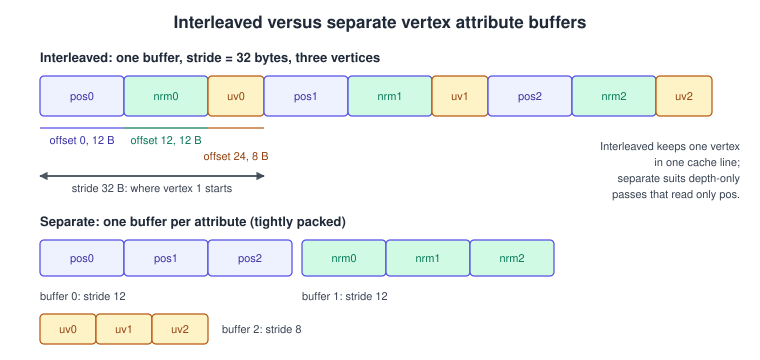
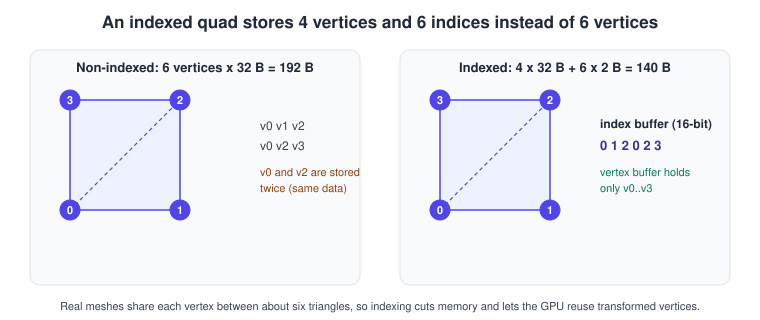
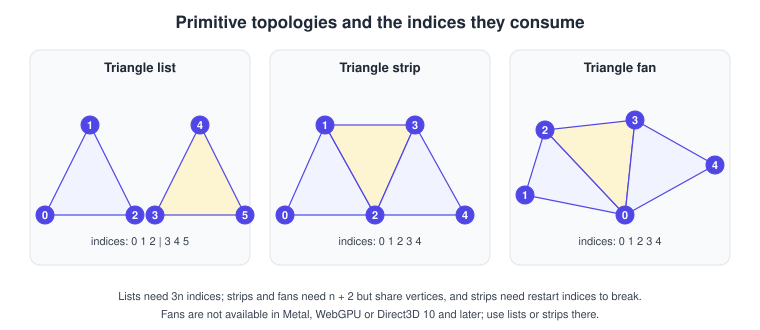
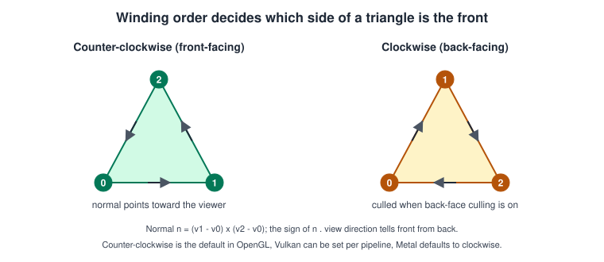
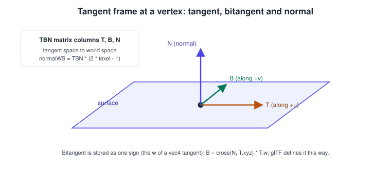

Meshes & Vertex Data
|
This content was generated with the assistance of AI and should be verified against the official documentation before being relied on in production. |
A mesh is the shape of everything you draw: the shelf boards, each book, the floor. To the GPU it is only two arrays, a list of vertices (each a bundle of numbers such as position, normal and texture coordinates) and, usually, a list of indices that say which vertices form each triangle. Most rendering bugs that look like "my model is inside out, stretched or black" come from a mistake in this data: a wrong stride, a wrong format, a flipped winding or a shared vertex that should have been split.
Facts were checked in November 2026 against glTF 2.0, OpenGL 4.6 and OpenGL ES 3.2, Vulkan 1.4, Metal 4, the WebGPU specification (W3C Candidate Recommendation Draft of 15 September 2026), and Unity 6. The page is API-neutral first, then shows the same vertex layout in each API. It assumes the pipeline stages described in The rendering pipeline and feeds the texturing and lighting pages, which consume the UVs and normals defined here.
Anatomy of a vertex
A vertex is a set of attributes. The vertex shader receives them one vertex at a time; the rasteriser then interpolates the shader’s outputs across each triangle.
| Attribute | Typical format | Used for | Notes |
|---|---|---|---|
Position |
3 x 32-bit float |
placing the vertex |
glTF name |
Normal |
3 x float, or 3 x 8/16-bit signed normalised, or packed 10-10-10-2 |
lighting |
glTF |
Tangent |
4 x float or 4 x 16-bit snorm |
normal mapping |
glTF |
Texture coordinates (UV) |
2 x float, or 2 x 16-bit unorm/half |
sampling textures |
glTF |
Vertex colour |
4 x unorm8, or float |
baked tint, ambient occlusion |
glTF |
Joints and weights |
4 x uint8/uint16, 4 x unorm8/16 or float |
skeletal animation |
glTF |
Formats trade precision for bandwidth. A position in 32-bit float is 12 bytes; a normal in 10-10-10-2 is 4 bytes; UVs in half float are 4 bytes. Compressing the
attributes of the Bookshelf’s books from about 32 bytes per vertex to 16 halves the memory traffic of every draw and is the first optimisation for large scenes.
Never compress positions below 16 bits without a per-mesh scale and offset (glTF’s KHR_mesh_quantization extension standardises exactly that).
A GPU reads vertices according to a vertex layout (also called vertex input state, vertex descriptor or vertex array object, depending on the API): for each attribute the buffer it lives in, its byte offset, its format and the buffer’s stride (bytes between consecutive vertices).
Interleaved versus separate buffers

-
Interleaved: all attributes of one vertex are adjacent (position, normal, UV, position, normal, UV, and so on). One vertex fetch brings in everything the shader needs from a single cache line. It is the default for static meshes and what most engines import.
-
Separate (also called structure of arrays): one buffer per attribute. It is better when some passes need only one attribute, for example a depth pre-pass or a shadow pass that reads only positions, or when you update one attribute (animated positions) every frame without touching the others.
-
Hybrid: static attributes (UV, tangent) in one interleaved buffer and dynamic ones (skinned position and normal) in another.
glTF allows both: an accessor describes a typed view over a bufferView, and byteStride on the bufferView is present for interleaved data (a multiple of 4 and at most 252).
The stride is the most common source of bugs: for a vertex of position (12 bytes), normal (12) and UV (8) the stride is 32; a stride of 0 means "tightly packed" in OpenGL, Vulkan has no such
shortcut and requires an explicit stride, and Metal requires the stride you give in the vertex descriptor.
Alignment gotcha: in Metal and in C++ with SIMD types, a simd_float3 occupies 16 bytes, not 12. Use packed_float3 in shaders and MTLVertexFormat.float3 (12 bytes) with a tightly packed struct,
or pad explicitly.
Index buffers
An index buffer lists vertices by number so that triangles can share them. A quad drawn without indices needs 6 vertices; with indices it needs 4 vertices and 6 indices.

-
Index formats: 16-bit (up to 65 535 vertices) or 32-bit; use 16-bit whenever the mesh fits, because it halves index bandwidth. 8-bit indices exist in OpenGL ES and, through the
VK_KHR_index_type_uint8extension (core in Vulkan 1.4), in Vulkan; Metal and WebGPU offer 16- and 32-bit only. -
Vertex reuse: GPUs keep recently transformed vertices in a small post-transform cache, so the order of indices matters. Run a vertex-cache optimiser (meshoptimizer, Forsyth, Tipsify) once at import; it can reduce vertex shader work by tens of percent on large meshes.
-
Primitive restart: for strips, a reserved index value (all bits set, for example 0xFFFF) ends the current strip and starts another in a single draw call. It is enabled with
glEnable(GL_PRIMITIVE_RESTART_FIXED_INDEX)in OpenGL ES 3.0 and OpenGL 4.3,primitiveRestartEnablein Vulkan, always on for strips in Metal, andstripIndexFormatin WebGPU. glTF forbids the maximum value of the component type inside an index accessor for this reason. -
Base vertex:
glDrawElementsBaseVertex, Vulkan’svertexOffset, Metal’sbaseVertexand WebGPU’sbaseVertexadd a constant to every index, so many meshes can share one big vertex buffer and one big index buffer, which makes batching and multi-draw-indirect possible.
Primitive topologies

| Topology | Indices for n triangles | Availability |
|---|---|---|
Point list, line list, line strip |
n/a |
All APIs. Line width other than 1 pixel is not portable (Vulkan |
Triangle list |
3n |
All APIs. The default and the safest choice (glTF mode 4). |
Triangle strip |
n + 2 |
All APIs. Needs primitive restart to break into pieces (glTF mode 5). |
Triangle fan |
n + 2 |
OpenGL, OpenGL ES, Vulkan (portability subsets may omit it), glTF mode 6. Not available in Metal, WebGPU or Direct3D 10 and later. |
Patch list |
per patch |
Tessellation input; see advanced pipeline stages. |
In practice, modern content is exported as triangle lists with vertex-cache-optimised indices; strips and fans are mostly of historical interest. The topology of a draw is set per draw in OpenGL
(glDrawElements(GL_TRIANGLES, count, type, offset)), but is part of the pipeline state in Vulkan, Metal’s render pipeline (as a topology class) and WebGPU.
Winding order, facing and culling
A triangle’s front face is decided by the order in which its vertices appear on screen: counter-clockwise or clockwise. Back-face culling discards the triangles that face away from the camera, which for a closed object removes about half the triangles before shading.

| API | Default front face | Default cull mode | How to change |
|---|---|---|---|
OpenGL / OpenGL ES |
counter-clockwise |
culling disabled |
|
Vulkan |
no default (set in the pipeline) |
none |
|
Metal |
clockwise |
none |
|
WebGPU |
|
|
|
glTF |
counter-clockwise (front) |
per material |
when |
Winding is defined after the projection to the screen, so anything that mirrors the picture reverses it: a negative scale on a node, a viewport with negative height used to flip Y in Vulkan, or a left-handed to right-handed conversion. When a mesh appears inside out only after being mirrored, flip the winding in the pipeline state for that draw (or negate one axis and reverse the indices). The normal of a front-facing triangle is \(\mathbf{n} = (\mathbf{v}_1 - \mathbf{v}_0) \times (\mathbf{v}_2 - \mathbf{v}_0)\) for counter-clockwise winding in a right-handed system.
Normals, tangents and UVs
Normals are per-vertex unit vectors. A smooth sphere shares one normal per vertex (the average of the surrounding face normals); a cube has hard edges, so each corner needs three different normals, one per adjoining face. That is why the Bookshelf’s boards and books are stored with 24 vertices (4 per face x 6 faces) and 36 indices, not 8 vertices, even though they are boxes. The same rule applies to UVs: a UV seam (where the texture is cut open to unwrap the mesh) also needs duplicated vertices, because one vertex can carry only one UV.
Tangents complete the frame used by normal mapping. Together with the normal they define the direction of the texture’s U and V axes on the surface.

The bitangent is normally reconstructed in the shader as \(\mathbf{B} = (\mathbf{N} \times \mathbf{T}_{xyz})\, T_w\), which is why glTF stores only a sign in the tangent’s w component. If a model has a normal map and no tangents, glTF asks the viewer to compute them with MikkTSpace, the de facto standard; an engine that uses different tangents from the baker produces subtle lighting seams.
UV conventions differ between tools and APIs. glTF puts the UV origin at the top left of the image with +V pointing down (like most image formats), while OpenGL’s texture-space convention puts the origin at the bottom left. Exporters and importers flip V accordingly; a texture that appears upside down is a V flip, not a bad file. See the textures page for how UVs address a texture.
Instancing
Instancing draws the same mesh many times with one call, with per-instance data (a transform, a colour, an animation offset) supplied either as a second vertex buffer stepped once per instance or as a buffer read with the instance index. For the shelf’s nine books, a single instanced draw replaces nine, and for a field of grass it replaces tens of thousands.
-
OpenGL:
glDrawElementsInstancedandglVertexAttribDivisor; the shader readsgl_InstanceID. -
Vulkan:
vkCmdDrawIndexed(cmd, indexCount, instanceCount, firstIndex, vertexOffset, firstInstance), a vertex binding withVK_VERTEX_INPUT_RATE_INSTANCE, shader built-inInstanceIndex(GLSLgl_InstanceIndex). -
Metal:
drawIndexedPrimitives(type:indexCount:indexType:indexBuffer:indexBufferOffset:instanceCount:), a vertex layout with.perInstancestep function. -
WebGPU:
drawIndexed(indexCount, instanceCount), a vertex buffer layout withstepMode: 'instance', WGSL built-ininstance_index. -
Unity: GPU instancing on materials,
Graphics.RenderMeshInstanced, the SRP Batcher and the GPU Resident Drawer. Unreal Engine: instanced static meshes and hierarchical instanced static meshes.
Level of detail
A distant book does not need the triangles of a close-up. Discrete LOD stores several versions of a mesh and swaps them by distance or screen-space size; each LOD needs its own index buffer, and often a shared vertex buffer. Switching causes visible popping unless you cross-fade or choose thresholds carefully. Mesh simplification (edge collapse; the meshoptimizer library implements it) generates the lower versions automatically. Unreal Engine 5’s Nanite virtualised geometry and meshlet-based pipelines (see mesh and task shaders) move this decision to the GPU at cluster granularity.
Complete examples
A Bookshelf box in C++ (24 vertices, 36 indices)
#include <array>
#include <cstdint>
#include <vector>
struct Vertex {
float position[3];
float normal[3];
float uv[2]; // 32 bytes: the stride used below
};
// Builds a box centred on the origin. Each face has its own four vertices
// because normals and UVs differ per face.
void makeBox(float sx, float sy, float sz,
std::vector<Vertex>& vertices, std::vector<uint16_t>& indices) {
struct Face { float n[3]; float u[3]; float v[3]; }; // normal and two edge axes
const Face faces[6] = {
{{ 1, 0, 0}, {0, 0,-1}, {0, 1, 0}}, {{-1, 0, 0}, {0, 0, 1}, {0, 1, 0}},
{{ 0, 1, 0}, {1, 0, 0}, {0, 0,-1}}, {{ 0,-1, 0}, {1, 0, 0}, {0, 0, 1}},
{{ 0, 0, 1}, {1, 0, 0}, {0, 1, 0}}, {{ 0, 0,-1}, {-1, 0, 0}, {0, 1, 0}},
};
const float half[3] = {sx * 0.5f, sy * 0.5f, sz * 0.5f};
for (const Face& f : faces) {
uint16_t base = static_cast<uint16_t>(vertices.size());
const float corners[4][2] = {{-1, -1}, {1, -1}, {1, 1}, {-1, 1}};
for (int c = 0; c < 4; ++c) {
Vertex v{};
for (int a = 0; a < 3; ++a) {
v.position[a] = half[a] * (f.n[a] + corners[c][0] * f.u[a] + corners[c][1] * f.v[a]);
v.normal[a] = f.n[a];
}
v.uv[0] = (corners[c][0] + 1.f) * 0.5f;
v.uv[1] = 1.f - (corners[c][1] + 1.f) * 0.5f; // V down, as in glTF
vertices.push_back(v);
}
// counter-clockwise when seen from outside the box
const uint16_t quad[6] = {0, 1, 2, 0, 2, 3};
for (uint16_t i : quad) indices.push_back(base + i);
}
}The same layout in OpenGL (C++)
// Assumes a current OpenGL 4.5 core context and the vectors built above.
GLuint vao, vbo, ebo;
glCreateVertexArrays(1, &vao);
glCreateBuffers(1, &vbo);
glCreateBuffers(1, &ebo);
glNamedBufferStorage(vbo, vertices.size() * sizeof(Vertex), vertices.data(), 0);
glNamedBufferStorage(ebo, indices.size() * sizeof(uint16_t), indices.data(), 0);
glVertexArrayVertexBuffer(vao, 0, vbo, 0, sizeof(Vertex)); // binding 0, stride 32
glVertexArrayElementBuffer(vao, ebo);
glEnableVertexArrayAttrib(vao, 0); // position
glVertexArrayAttribFormat(vao, 0, 3, GL_FLOAT, GL_FALSE, offsetof(Vertex, position));
glVertexArrayAttribBinding(vao, 0, 0);
glEnableVertexArrayAttrib(vao, 1); // normal
glVertexArrayAttribFormat(vao, 1, 3, GL_FLOAT, GL_FALSE, offsetof(Vertex, normal));
glVertexArrayAttribBinding(vao, 1, 0);
glEnableVertexArrayAttrib(vao, 2); // uv
glVertexArrayAttribFormat(vao, 2, 2, GL_FLOAT, GL_FALSE, offsetof(Vertex, uv));
glVertexArrayAttribBinding(vao, 2, 0);
glEnable(GL_CULL_FACE); // GL_CCW is the default front face
glBindVertexArray(vao);
glDrawElements(GL_TRIANGLES, static_cast<GLsizei>(indices.size()), GL_UNSIGNED_SHORT, nullptr);The same layout in WebGPU (JavaScript)
const vertexBuffer = device.createBuffer({
size: vertexData.byteLength, // Float32Array, 8 floats per vertex
usage: GPUBufferUsage.VERTEX | GPUBufferUsage.COPY_DST,
});
device.queue.writeBuffer(vertexBuffer, 0, vertexData);
const indexBuffer = device.createBuffer({
size: indexData.byteLength, // Uint16Array (4-byte multiple: pad to even count)
usage: GPUBufferUsage.INDEX | GPUBufferUsage.COPY_DST,
});
device.queue.writeBuffer(indexBuffer, 0, indexData);
const pipeline = device.createRenderPipeline({
layout: 'auto',
vertex: {
module: shaderModule,
entryPoint: 'vs',
buffers: [{
arrayStride: 32,
stepMode: 'vertex',
attributes: [
{ shaderLocation: 0, offset: 0, format: 'float32x3' }, // position
{ shaderLocation: 1, offset: 12, format: 'float32x3' }, // normal
{ shaderLocation: 2, offset: 24, format: 'float32x2' }, // uv
],
}],
},
fragment: { module: shaderModule, entryPoint: 'fs', targets: [{ format: presentationFormat }] },
primitive: { topology: 'triangle-list', frontFace: 'ccw', cullMode: 'back' },
});
// inside a render pass
pass.setPipeline(pipeline);
pass.setVertexBuffer(0, vertexBuffer);
pass.setIndexBuffer(indexBuffer, 'uint16');
pass.drawIndexed(36);Source: WebGPU: vertex state and primitive state
The same layout in Metal (Swift)
import Metal
let vertexDescriptor = MTLVertexDescriptor()
vertexDescriptor.attributes[0].format = .float3 // position
vertexDescriptor.attributes[0].offset = 0
vertexDescriptor.attributes[0].bufferIndex = 0
vertexDescriptor.attributes[1].format = .float3 // normal
vertexDescriptor.attributes[1].offset = 12
vertexDescriptor.attributes[1].bufferIndex = 0
vertexDescriptor.attributes[2].format = .float2 // uv
vertexDescriptor.attributes[2].offset = 24
vertexDescriptor.attributes[2].bufferIndex = 0
vertexDescriptor.layouts[0].stride = 32 // not MemoryLayout<SIMD3<Float>>.stride (16)
vertexDescriptor.layouts[0].stepFunction = .perVertex
let descriptor = MTLRenderPipelineDescriptor()
descriptor.vertexDescriptor = vertexDescriptor
// ... set shader functions and pixel formats, then create the pipeline state.
// Encoding (Metal's default front-facing winding is clockwise, so set it explicitly):
encoder.setFrontFacing(.counterClockwise)
encoder.setCullMode(.back)
encoder.setVertexBuffer(vertexBuffer, offset: 0, index: 0)
encoder.drawIndexedPrimitives(type: .triangle, indexCount: 36, indexType: .uint16,
indexBuffer: indexBuffer, indexBufferOffset: 0)Source: Apple: MTLVertexDescriptor
The same layout in Vulkan (C++)
VkVertexInputBindingDescription binding{};
binding.binding = 0;
binding.stride = sizeof(Vertex); // 32
binding.inputRate = VK_VERTEX_INPUT_RATE_VERTEX;
VkVertexInputAttributeDescription attributes[3] = {
{0, 0, VK_FORMAT_R32G32B32_SFLOAT, offsetof(Vertex, position)},
{1, 0, VK_FORMAT_R32G32B32_SFLOAT, offsetof(Vertex, normal)},
{2, 0, VK_FORMAT_R32G32_SFLOAT, offsetof(Vertex, uv)},
};
VkPipelineVertexInputStateCreateInfo vertexInput{VK_STRUCTURE_TYPE_PIPELINE_VERTEX_INPUT_STATE_CREATE_INFO};
vertexInput.vertexBindingDescriptionCount = 1;
vertexInput.pVertexBindingDescriptions = &binding;
vertexInput.vertexAttributeDescriptionCount = 3;
vertexInput.pVertexAttributeDescriptions = attributes;
VkPipelineInputAssemblyStateCreateInfo inputAssembly{VK_STRUCTURE_TYPE_PIPELINE_INPUT_ASSEMBLY_STATE_CREATE_INFO};
inputAssembly.topology = VK_PRIMITIVE_TOPOLOGY_TRIANGLE_LIST;
VkPipelineRasterizationStateCreateInfo raster{VK_STRUCTURE_TYPE_PIPELINE_RASTERIZATION_STATE_CREATE_INFO};
raster.cullMode = VK_CULL_MODE_BACK_BIT;
raster.frontFace = VK_FRONT_FACE_COUNTER_CLOCKWISE;
raster.lineWidth = 1.0f;
// Recording:
VkDeviceSize offset = 0;
vkCmdBindVertexBuffers(cmd, 0, 1, &vertexBuffer, &offset);
vkCmdBindIndexBuffer(cmd, indexBuffer, 0, VK_INDEX_TYPE_UINT16);
vkCmdDrawIndexed(cmd, 36, 1, 0, 0, 0);Instancing the books in GLSL
#version 450 core
layout(location = 0) in vec3 aPosition;
layout(location = 1) in vec3 aNormal;
layout(location = 2) in vec2 aUv;
layout(location = 3) in mat4 aModel; // occupies locations 3 to 6, advanced once per instance
uniform mat4 uViewProjection;
out vec3 vNormal;
out vec2 vUv;
void main() {
gl_Position = uViewProjection * aModel * vec4(aPosition, 1.0);
vNormal = mat3(aModel) * aNormal; // valid for rotation and uniform scale only
vUv = aUv;
}Mesh data in Unity (C#)
using UnityEngine;
using UnityEngine.Rendering;
public static class BookMesh
{
public static Mesh Create(Vector3[] positions, Vector3[] normals, Vector2[] uvs, ushort[] indices)
{
var mesh = new Mesh { name = "Book" };
mesh.SetVertexBufferParams(positions.Length,
new VertexAttributeDescriptor(VertexAttribute.Position, VertexAttributeFormat.Float32, 3, stream: 0),
new VertexAttributeDescriptor(VertexAttribute.Normal, VertexAttributeFormat.Float32, 3, stream: 0),
new VertexAttributeDescriptor(VertexAttribute.TexCoord0, VertexAttributeFormat.Float16, 2, stream: 1));
// ... fill streams 0 and 1 with SetVertexBufferData, then:
mesh.SetIndexBufferParams(indices.Length, IndexFormat.UInt16);
mesh.SetIndexBufferData(indices, 0, 0, indices.Length);
mesh.SetSubMesh(0, new SubMeshDescriptor(0, indices.Length, MeshTopology.Triangles));
mesh.RecalculateBounds();
return mesh;
}
}A glTF mesh primitive
{
"meshes": [{ "primitives": [{
"attributes": { "POSITION": 0, "NORMAL": 1, "TEXCOORD_0": 2 },
"indices": 3, "material": 0, "mode": 4 }] }],
"accessors": [
{ "bufferView": 0, "byteOffset": 0, "componentType": 5126, "count": 24, "type": "VEC3",
"min": [-0.5, -0.5, -0.5], "max": [0.5, 0.5, 0.5] },
{ "bufferView": 0, "byteOffset": 12, "componentType": 5126, "count": 24, "type": "VEC3" },
{ "bufferView": 0, "byteOffset": 24, "componentType": 5126, "count": 24, "type": "VEC2" },
{ "bufferView": 1, "componentType": 5123, "count": 36, "type": "SCALAR" }
],
"bufferViews": [
{ "buffer": 0, "byteOffset": 0, "byteLength": 768, "byteStride": 32, "target": 34962 },
{ "buffer": 0, "byteOffset": 768, "byteLength": 72, "target": 34963 }
]
}Common mistakes
-
Wrong stride or offset. The mesh looks like sheared spikes. Compute the stride with
sizeofand offsets withoffsetof, never by hand. -
Using a 16-byte
float3in a 12-byte layout (Metal, Swift SIMD, std140 uniform buffers). -
Sharing vertices across hard edges or UV seams, which smears normals and textures. Duplicate the vertex instead.
-
Indices out of range, or a 16-bit index type with more than 65 535 vertices. Validation layers catch it; drivers otherwise show garbage or crash.
-
Winding mixed with a mirrored transform, producing invisible or inside-out meshes. Check
determinantof the model matrix: a negative determinant reverses the winding. -
Non-unit normals after non-uniform scaling. Use the inverse transpose of the model matrix for normals, not the model matrix itself.
-
Forgetting the buffer size alignment (WebGPU writes must be a multiple of 4 bytes; 16-bit index data needs an even count or padding).
-
Using a triangle fan on Metal or WebGPU (not supported) or relying on primitive restart without setting the strip index format.
Performance notes
-
Keep vertices small: quantise normals, tangents, UVs and colours; interleave static attributes.
-
Optimise index order for the vertex cache and vertex order for fetch locality (meshoptimizer), then the overdraw order if the mesh is large.
-
Merge static meshes into large buffers and use base vertex offsets, so the draw count and buffer binds fall; see performance and profiling.
-
Use 16-bit indices where possible, instancing for repeated objects and LOD for distant ones.
-
On Apple GPUs and other tile-based GPUs, vertex data for the whole frame is processed before rasterisation; keep the vertex shader lean. See GPU architecture basics.
-
Update dynamic vertices through a staging buffer or persistently mapped memory, not by recreating buffers every frame.
Recent changes
-
glTF 2.0 (also ISO/IEC 12113:2022) remains the interchange format;
KHR_mesh_quantization,EXT_meshopt_compressionandKHR_draco_mesh_compressionstore compressed attributes and indices. -
Vulkan 1.4 includes 8-bit index support in the core specification; Vulkan, Metal 4 and WebGPU all expose base-vertex and indirect indexed draws.
-
Mesh shaders (Vulkan
VK_EXT_mesh_shader, Metal mesh shaders, Direct3D 12) replace the fixed input assembler for meshlet-based content; the classic vertex and index buffers described here remain the default. -
Unity 6 and Unreal Engine 5 render large instanced scenes through GPU-driven paths (the GPU Resident Drawer, Nanite) that still start from the mesh data above.
What the books say, and what changed
Selman’s Java 3D Programming (ch. 8) and the Java 3D API Specification 1.3 (ch. 8) describe geometry through GeometryArray and its subclasses (TriangleArray, TriangleStripArray, IndexedTriangleArray)
with vertex formats declared by flags such as COORDINATES, NORMALS and TEXTURE_COORDINATE_2, optionally "by reference" to avoid copies and updated through GeometryUpdater. The concepts (a format, a vertex count,
strips, indexing) are the same as above. The OpenGL ES 3.0 Programming Guide (ch. 6) teaches vertex attributes, vertex buffer objects and vertex array objects; that chapter is still accurate for OpenGL ES 3.0 and later.
| In the books | Today |
|---|---|
Java 3D |
Typed accessors and buffer views as in glTF; the GPU buffer APIs shown above. |
|
glTF with Draco ( |
Vertex arrays through client memory pointers (OpenGL ES 2.0 style, |
Buffer objects and vertex array objects only; OpenGL 4.3 and ES 3.1 add separate format and buffer binding ( |
Immediate mode ( |
Removed from the core profile; all geometry comes from buffers. |
Java 3D 1.2.1 and 1.3 on JDK 1.3 |
Java 3D 1.7.x maintained by JogAmp on JOGL; most Java projects now use LWJGL or an engine. |
See it in
OpenGL: Buffers and Vertex Specification; WebGL: Buffers, Attributes, Uniforms and VAOs and three.js Geometry; Metal: Buffers and Vertex Descriptors; Vulkan: Vertex Input and Drawing in Vulkan; Unreal Engine: Nanite and Virtual Geometry.
References
-
glTF 2.0 specification (meshes, accessors, buffer views): https://registry.khronos.org/glTF/specs/2.0/glTF-2.0.html
-
Khronos glTF extensions registry (mesh quantization, Draco, meshopt): https://github.com/KhronosGroup/glTF/tree/main/extensions
-
OpenGL 4 reference pages: https://registry.khronos.org/OpenGL-Refpages/gl4/
-
Vulkan specification: https://docs.vulkan.org/spec/latest/
-
WebGPU specification: https://www.w3.org/TR/webgpu/
-
Metal documentation: https://developer.apple.com/documentation/metal
-
Unity Scripting API, Mesh: https://docs.unity3d.com/ScriptReference/Mesh.html
-
meshoptimizer: https://github.com/zeux/meshoptimizer
-
Java 3D (JogAmp): https://github.com/jogamp/java3d-core
-
Daniel Selman, Java 3D Programming (Manning, 2002): https://www.manning.com/books/java-3d-programming